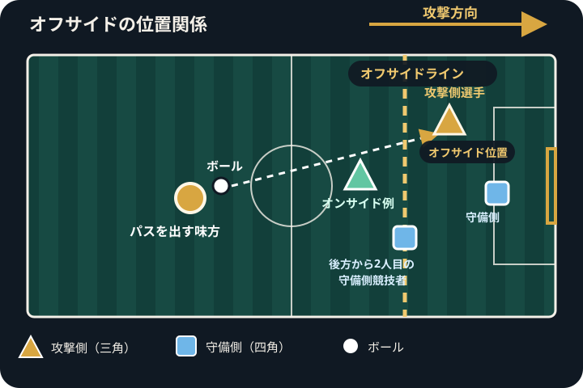

Offside Rule Guide
サッカーのオフサイドとは？初心者向けにルールをわかりやすく解説
オフサイドは、攻撃側の選手が相手ゴール前で待ち続けて一方的に有利になることを防ぐためのルールです。位置だけで反則になるわけではなく、味方がボールに触れた瞬間と、その後のプレーへの関わり方を分けて見ることが大切です。
オフサイドを一言で説明すると
味方がボールをプレーまたは触れた瞬間にオフサイドポジションにいた選手が、そのプレーに関与したときに成立する反則です。相手ゴールに近い場所にいるだけでは、ただちに反則にはなりません。

オフサイドポジションの条件
選手は、次の条件をすべて満たすとオフサイドポジションにいると判断されます。
- 頭、胴体、足のいずれかの部分が、ハーフウェーラインを除く相手競技者のハーフ内にある
- 頭、胴体、足のいずれかの部分が、ボールより相手ゴールラインに近い
- 頭、胴体、足のいずれかの部分が、後方から2人目の相手競技者より相手ゴールラインに近い
手や腕は、ゴールキーパーを含めて判定に使いません。後方から2人目の相手競技者、または最後方の2人の相手競技者と同じ位置に並んでいる場合も、オフサイドポジションではありません。
オフサイドになる瞬間はいつか
位置関係を確認する基準は、ボールを受けた瞬間ではなく、味方競技者がボールをプレーまたは触れた瞬間です。その瞬間の選手、ボール、後方から2人目の相手競技者の位置を見て、まずオフサイドポジションかどうかを判断します。
その後、対象の選手がプレーに関与した時点で反則かどうかが決まります。パスが出てから走り出し、ボールを受けるときには相手守備者より前にいても、基準の瞬間に正しい位置ならオフサイドではありません。
オフサイドポジションにいるだけでは反則ではない
オフサイドポジションにいた選手が、ボールに触れず、相手競技者のプレーも妨げず、こぼれ球などから利益も得なければ、通常は反則になりません。審判は位置だけでなく、その選手が実際のプレーに影響したかを確認します。
プレーへの関与が反則判定につながる
オフサイドポジションにいた選手が、主に次のような形で関与すると反則になります。
- 味方がプレーまたは触れたボールを、自分でプレーするか触れる
- 相手の視線を明確に遮る、ボールを争うなどして相手競技者のプレーを妨げる
- ゴールポスト、クロスバー、相手競技者などから跳ね返ったボールをプレーして利益を得る
実際の判定では、相手競技者の意図的なプレーやセーブ、ボールへの影響など細かな条件も関わります。迷う場面では、公式競技規則を基準に確認してください。
ゴールキック・スローイン・コーナーキックの例外
選手が次の再開方法からボールを直接受けた場合、オフサイドの反則にはなりません。
- ゴールキック
- スローイン
- コーナーキック
ただし、その後に味方がボールをプレーまたは触れた時点からは、通常のオフサイド判定が始まります。「コーナーキックならその後もずっと例外」という意味ではありません。
初心者が間違えやすいポイント
- 相手ゴールに近いだけで必ず反則になるわけではない
- 判定の基準はボールを受ける瞬間ではなく、味方がボールに触れた瞬間
- 自陣にいる選手はオフサイドポジションにならない
- 手や腕が守備者より前に出ていても、位置判定には含めない
- パスの向きだけでなく、選手とボールと相手競技者の位置関係で判断する
観戦時に注目するポイント
- パスを出す選手の足元と、受け手が走り出したタイミングを同時に見る
- 後方から2人目の相手競技者とボールの位置を確認する
- 受け手がボールや相手競技者に実際に関与したかを見る
- ゴールキック、スローイン、コーナーキックから直接受けた場面か確認する
IFAB公式競技規則で最終確認する
オフサイドの正式な条件や細かな判定例は、競技規則を定めるIFABの Law 11 - Offside で確認できます。大会や判定に関する最終的な確認には、最新の公式競技規則を参照してください。